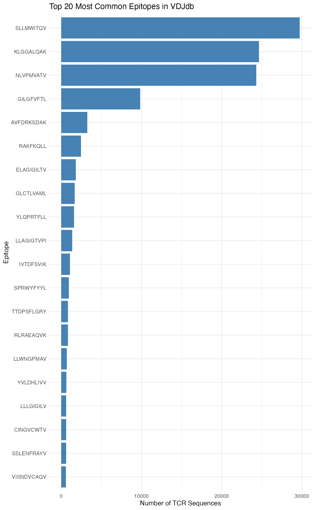
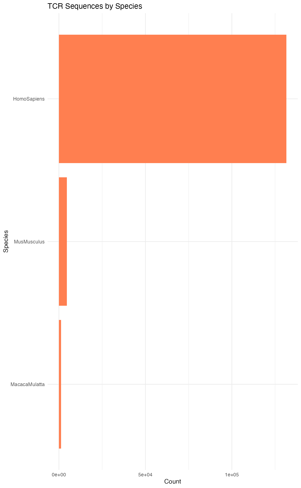
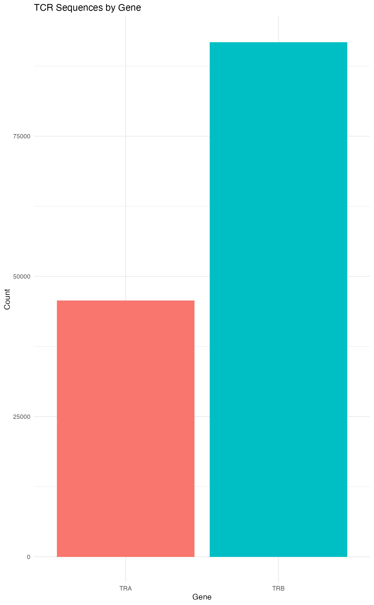
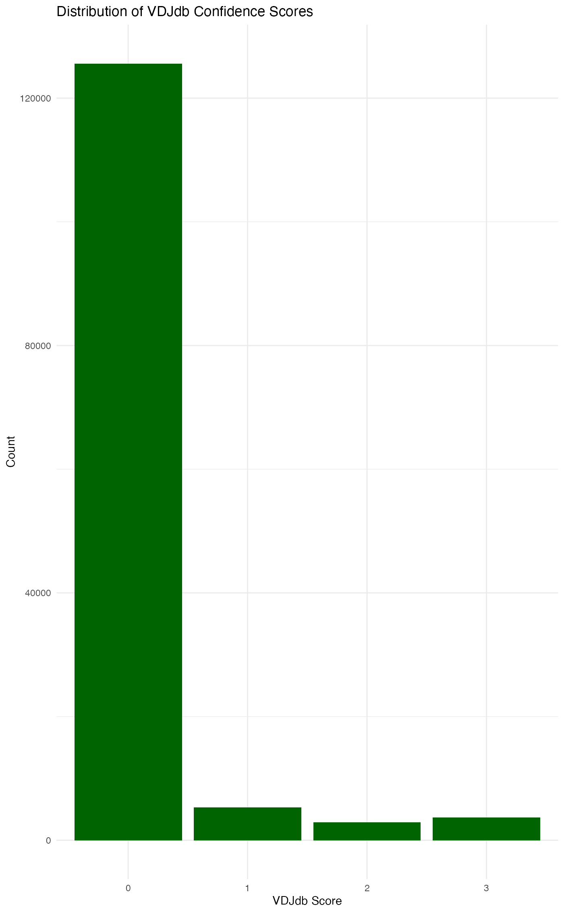
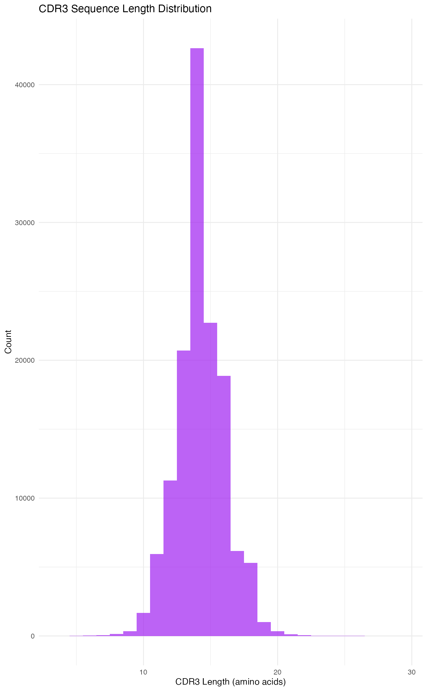
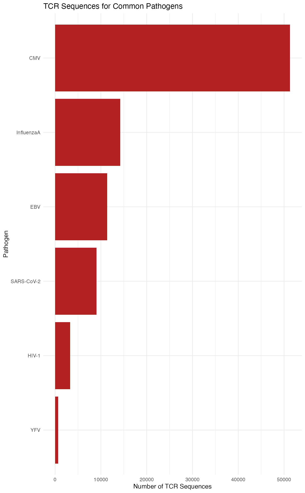

Database management and filtering
vdjmatchR Authors
Source:vignettes/database-management.Rmd
database-management.RmdInstallation
Prerequisites
- R (>= 4.0)
- Rust (>= 1.70) - Install Rust
- R development tools (Rtools on Windows, Xcode Command Line Tools on macOS)
From Github in R
devtools::install_github("furlan-lab/vdjmatchR")Overview
This vignette covers using the packaged VDJdb, filtering it for common use cases, and how to point the package to your own database file.
Packaged database and updates
library(vdjmatchR)
# Use the slim VDJdb bundled with the package
path <- vdjdb_packaged_path(use_fat_db = FALSE)
# Optionally update to the latest slim/full VDJdb into the package's extdata
# path <- vdjdb_update_latest(use_fat_db = FALSE)
# Or use the full ("fat") VDJdb bundled with the package
# path <- vdjdb_packaged_path(use_fat_db = TRUE)Load and inspect
db <- vdjdb_open_file(path)
vdjdb_len(db)
#> [1] 137484Filter by species, gene, and VDJdb score
# Human TRB, minimum VDJdb score 2
fdb <- filter_db(db, species = "HomoSapiens", gene = "TRB", min_vdjdb_score = 2)Filter by epitope size
# Keep epitopes with at least 5 unique CDR3 entries
fdb2 <- filter_db_by_epitope_size(fdb, min_size = 5)Use your own database file
# Tell vdjmatchR where your own VDJdb file is for this session
vdjdb_set_user_db("/path/to/vdjdb.txt.gz", use_fat_db = TRUE)
path <- vdjdb_path(use_fat_db = TRUE)Converting database to R objects for exploration
The VDJdb database can be converted to standard R data structures for exploration, analysis, and visualization using familiar R tools.
Database summary
Get a quick overview of database contents:
# Print summary statistics
db_summary(db)
#> VDJdb Database Summary
#> ======================
#> Total entries: 137484
#>
#> By species:
#>
#> HomoSapiens MusMusculus MacacaMulatta
#> 131574 4620 1290
#>
#> By gene:
#>
#> TRB TRA
#> 91778 45706
#>
#> By species and gene:
#> species gene count
#> HomoSapiens TRB 87610
#> HomoSapiens TRA 43964
#> MusMusculus TRB 2878
#> MusMusculus TRA 1742
#> MacacaMulatta TRB 1290Convert to data.table
For interactive exploration and manipulation, convert the database to a data.table:
library(data.table)
# Convert full database to data.table
dt <- db_to_table(db)
# Or convert filtered database
dt_filtered <- db_to_table(fdb)
# Inspect structure
str(dt)
#> Classes 'data.table' and 'data.frame': 137484 obs. of 11 variables:
#> $ gene : chr "TRA" "TRA" "TRA" "TRA" ...
#> $ cdr3 : chr "AQGLLTGGGNKLTF" "ASMFSGGGNEKFTF" "ASMYKGGGNEKFTF" "CAAAAGNMLTF" ...
#> $ v_segment : chr "TRAV29/DV5*01" "TRAV12-2*01" "TRAV26-2*01" "TRAV29/DV5*01" ...
#> $ j_segment : chr "TRAJ10*01" "TRAJ48*01" "TRAJ45*01" "TRAJ39*01" ...
#> $ species : chr "HomoSapiens" "HomoSapiens" "HomoSapiens" "HomoSapiens" ...
#> $ antigen_epitope: chr "RLGPVQNEV" "RLGPVQNEV" "RLGPVQNEV" "FMVFLQTHI" ...
#> $ antigen_gene : chr "NS3" "NS3" "NS3" "EBNA1" ...
#> $ antigen_species: chr "HCV" "HCV" "HCV" "EBV" ...
#> $ mhc_class : chr "MHCI" "MHCI" "MHCI" "MHCI" ...
#> $ reference_id : chr "" "" "" "PMID:40640147" ...
#> $ vdjdb_score : int 0 0 0 0 0 0 0 0 3 0 ...
#> - attr(*, ".internal.selfref")=<externalptr>
head(dt)
#> gene cdr3 v_segment j_segment species antigen_epitope
#> <char> <char> <char> <char> <char> <char>
#> 1: TRA AQGLLTGGGNKLTF TRAV29/DV5*01 TRAJ10*01 HomoSapiens RLGPVQNEV
#> 2: TRA ASMFSGGGNEKFTF TRAV12-2*01 TRAJ48*01 HomoSapiens RLGPVQNEV
#> 3: TRA ASMYKGGGNEKFTF TRAV26-2*01 TRAJ45*01 HomoSapiens RLGPVQNEV
#> 4: TRA CAAAAGNMLTF TRAV29/DV5*01 TRAJ39*01 HomoSapiens FMVFLQTHI
#> 5: TRA CAAAAGNTGKLIF TRAV13-1*01 TRAJ37*01 HomoSapiens SLFFSAQPFEITAST
#> 6: TRA CAAAAGNTGKLIF TRAV5N-4*01 TRAJ37*01 MusMusculus HGIRNASFI
#> antigen_gene antigen_species mhc_class reference_id vdjdb_score
#> <char> <char> <char> <char> <int>
#> 1: NS3 HCV MHCI 0
#> 2: NS3 HCV MHCI 0
#> 3: NS3 HCV MHCI 0
#> 4: EBNA1 EBV MHCI PMID:40640147 0
#> 5: APOB HomoSapiens MHCII PMID:35990517 0
#> 6: M45 MCMV MHCI PMID:28636592 0Convert to data.frame
Alternatively, convert to a standard data.frame:
# Convert to data.frame
df <- db_to_df(db)Exploring the database
Once converted, you can use standard R operations:
# Count entries by species
dt[, .N, by = species][order(-N)]
#> species N
#> <char> <int>
#> 1: HomoSapiens 131574
#> 2: MusMusculus 4620
#> 3: MacacaMulatta 1290
# Count entries by gene
dt[, .N, by = gene][order(-N)]
#> gene N
#> <char> <int>
#> 1: TRB 91778
#> 2: TRA 45706
# Find most common epitopes
dt[, .N, by = antigen_epitope][order(-N)][1:10]
#> antigen_epitope N
#> <char> <int>
#> 1: SLLMWITQV 29735
#> 2: KLGGALQAK 24639
#> 3: NLVPMVATV 24297
#> 4: GILGFVFTL 9827
#> 5: AVFDRKSDAK 3255
#> 6: RAKFKQLL 2456
#> 7: ELAGIGILTV 1801
#> 8: GLCTLVAML 1662
#> 9: YLQPRTFLL 1588
#> 10: LLAGIGTVPI 1364
# Explore specific viral epitopes
viral_epitopes <- dt[antigen_species %in% c("CMV", "EBV", "InfluenzaA")]
viral_epitopes[, .N, by = .(antigen_species, antigen_epitope)][order(-N)][1:15]
#> antigen_species antigen_epitope N
#> <char> <char> <int>
#> 1: CMV KLGGALQAK 24639
#> 2: CMV NLVPMVATV 24297
#> 3: InfluenzaA GILGFVFTL 9827
#> 4: EBV AVFDRKSDAK 3255
#> 5: EBV RAKFKQLL 2456
#> 6: EBV GLCTLVAML 1662
#> 7: EBV IVTDFSVIK 1088
#> 8: EBV RLRAEAQVK 819
#> 9: EBV YVLDHLIVV 640
#> 10: InfluenzaA SSLENFRAYV 597
#> 11: InfluenzaA SSYRRPVGI 586
#> 12: InfluenzaA PKYVKQNTLKLAT 513
#> 13: InfluenzaA ASNENMETM 388
#> 14: CMV TPRVTGGGAM 330
#> 15: CMV LLQTGIHVRVSQPSL 306
# Check VDJdb score distribution
dt[, .N, by = vdjdb_score][order(vdjdb_score)]
#> vdjdb_score N
#> <int> <int>
#> 1: 0 125592
#> 2: 1 5317
#> 3: 2 2892
#> 4: 3 3683Visualizing database contents
Create visualizations to understand database composition:
library(ggplot2)
# Epitope frequency distribution
epitope_counts <- dt[, .N, by = antigen_epitope][order(-N)][1:20]
ggplot(epitope_counts, aes(x = reorder(antigen_epitope, N), y = N)) +
geom_col(fill = "steelblue") +
coord_flip() +
labs(title = "Top 20 Most Common Epitopes in VDJdb",
x = "Epitope", y = "Number of TCR Sequences") +
theme_minimal()
# Species distribution
species_counts <- dt[, .N, by = species]
ggplot(species_counts, aes(x = reorder(species, N), y = N)) +
geom_col(fill = "coral") +
coord_flip() +
labs(title = "TCR Sequences by Species",
x = "Species", y = "Count") +
theme_minimal()
# Gene distribution
gene_counts <- dt[, .N, by = gene]
ggplot(gene_counts, aes(x = gene, y = N, fill = gene)) +
geom_col() +
labs(title = "TCR Sequences by Gene",
x = "Gene", y = "Count") +
theme_minimal() +
theme(legend.position = "none")
# VDJdb score distribution
score_dist <- dt[, .N, by = vdjdb_score]
ggplot(score_dist, aes(x = factor(vdjdb_score), y = N)) +
geom_col(fill = "darkgreen") +
labs(title = "Distribution of VDJdb Confidence Scores",
x = "VDJdb Score", y = "Count") +
theme_minimal()
# CDR3 length distribution
dt[, cdr3_length := nchar(cdr3)]
ggplot(dt[cdr3_length < 30], aes(x = cdr3_length)) +
geom_histogram(binwidth = 1, fill = "purple", alpha = 0.7) +
labs(title = "CDR3 Sequence Length Distribution",
x = "CDR3 Length (amino acids)", y = "Count") +
theme_minimal()
# Antigen species breakdown for common pathogens
pathogen_counts <- dt[antigen_species %in% c("CMV", "EBV", "InfluenzaA",
"SARS-CoV-2", "HIV-1", "YFV"),
.N, by = antigen_species][order(-N)]
ggplot(pathogen_counts, aes(x = reorder(antigen_species, N), y = N)) +
geom_col(fill = "firebrick") +
coord_flip() +
labs(title = "TCR Sequences for Common Pathogens",
x = "Pathogen", y = "Number of TCR Sequences") +
theme_minimal()
Subsetting and exporting
Extract specific subsets for further analysis:
# Extract all CMV-specific TCRs
cmv_tcrs <- dt[antigen_species == "CMV"]
# Extract high-confidence entries
high_conf <- dt[vdjdb_score >= 2]
# Export to CSV for external analysis
fwrite(cmv_tcrs, "cmv_tcrs.csv")Reproducibility hints
- Record the file path used (
vdjdb_path()) and include it in your analysis metadata. - Consider snapshotting the TSV file alongside your project for long-term reproducibility.